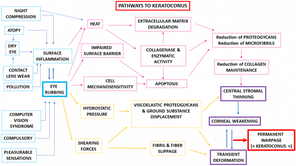

What is Keratoconus?
Keratoconus is an eye disease that cause distorted vision. It is hard to diagnose, starts in the adolescence and worsens with time. The basic treatment is contact lenses designed for keratoconus, but other options are available like “crosslinking” to strengthen the cornea, intracorneal rings to give more structure to it, and of course a corneal transplant. Glasses or normal contact lenses don’t correct the vision satisfactorily, so activities like reading and driving become impossible. Advanced cases need specialty contact lenses like Scleral lenses.
Why the rub?
Why rubbing your eyes? We do it when we wake up, before sleeping and when we are fatigued or stressed. Kids love to rub their eyes, the rubbing is pleasurable and has a calming effect. By rubbing the eyes, tear production increases and the pressure of eye rubbing stimulates the vagus nerve slowing the heart. Rubbing can be caused by conditions hard to assess like allergies, and can become a habit; habits are hard to observe and are mostly unconscious. In short rubbing your eyes is a risk factor to developing keratoconus.
Hypothesis
The cascade hypothesis (Kenney, 2003) states that a keratoconus cornea has an abnormal level of degrading enzymes that produce a cascade of events that lead to thinning and deformation of the cornea. The genetic theory tries to find a genetic mutation for keratoconus, meaning that the disease is inherited; as of today no genetic mutations have been identified for any of the keratoconus chromosome loci, and the pattern of inheritance is less than 20 percent. Finally, the mechanical theory (Gatinel, 2016) claims that eye rubbing is the main root cause of keratoconus, by rubbing the eyes you are causing biomechanical instability to the cornea and reducing its resistance.
Occam’s razor
Have you heard the phrase? “The best explanations are the simplest ones.” This is commonly called “The occam razor.” (Wikipedia, 2021) This idea is frequently attributed to English Franciscan friar William of Ockham (c. 1287–1347), a scholastic philosopher and theologian.
Even Thomas Aquinas (1225–1274), In it’s “Summa Theologica” states that “it is superfluous to suppose that what can be accounted for by a few principles has been produced by many.”
Most of the time we imagine that the answers are complicated and difficult. We let our biases dictate how we see a situation and react like in the past; however, it is useful to see the situation in a new light. When we do this, the answer comes to us in a moment of inspiration, we just did not see it before.
Correlation and Causation
The phrase “correlation does not imply causation” (Wikipedia, 2021) refers to the inability to deduce a cause-and-effect relationship between two events; this events occurring together are taken to have a cause-and-effect relationship, solely based on an observed association. Statistical methods are normally used as the basis for testing hypotheses.
When two things are correlated it is tempting to think they are caused directly. Eye rubbing and allergies have been linked to keratoconus by correlation.
The idea presented in this essay and by Dr. Damien Gatinel, is that eye rubbing and keratoconus have a direct causative link, not just a statistical correlation.
What rubbing does?
The shape of the cornea is a result of the balance between external and internal forces applied to the eye and the biomechanical resistance of the cornea. Rubbing the eyes increases the production of enzymes called proteases, these enzymes degrade proteins causing an attack on normal tissues and altering the corneal shape and resistance. Constant eye rubbing results in the progressive deformation and thinning that are hallmarks of the disease labeled keratoconus.

Conclusion
Maybe rubbing your eyes starts the cascade of events that end with you having keratoconus. This theory is supported by the fact that more than 80% of keratoconus patients in the CLEK study (Barr, 2000) reported having rubbed their eyes vigorously. It is obvious that not all people who rub their eyes develop keratoconus, it is an idiopathic process (we don’t really know its origin). We have to take responsibility for our condition, and stop blaming a mysterious disease so we can do something about it, and not be victims anymore. I certainly rubbed my eyes when I was young, and I also nap on my belly. By recognizing how we use our eyes, we can avoid detrimental habits that will hurt us in the future.
If this is true, by stopping rubbing the eyes, we are truly halting the progression of keratoconus, and this is great news. Today, modern advances give us better lenses, diagnostics equipment, and treatments to aid us with this challenge than ever before.
For more info on these ideas and case studies visit the site Defeat Keratoconus or the doctor site below.
Barr, J. T., Zadnik, K., Wilson, B. S., Edrington, T. B., Everett, D. F., Fink, B. A., Shovlin, J. P., Weissman, B. A., Siegmund, K., & Gordon, M. O. (2000). Factors associated with corneal scarring in the Collaborative Longitudinal Evaluation of Keratoconus (CLEK) Study. Cornea, 19(4), 501–507. link
Cristina Kenney, M., & Brown, D. J. (2003). The cascade hypothesis of keratoconus. Contact lens & anterior eye : the journal of the British Contact Lens Association, 26(3), 139–146.link
Eye rubbing: a sine qua non for keratoconus? D Gatinel. Int K Kerat Ect Cor Dis, 2016;5(1):6-12
Wikipedia contributors. (2021, December 28). Occam’s razor. In Wikipedia, The Free Encyclopedia. Retrieved 07:51, December 30, 2021, from link
Wikipedia contributors. (2021, December 19). Correlation does not imply causation. In Wikipedia, The Free Encyclopedia. Retrieved 07 :54, December 30, 2021, from link
Join email list!
what you think! Subscribe to newsletter below.
Reach me @
heribertorangel.comLatest Posts

The Holistic Approach to Keratoconus Treatment

Five Surprising Things That Can Trigger Keratoconus